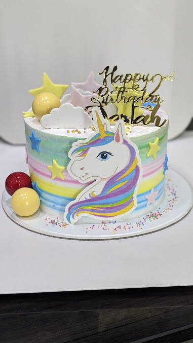

HELLO FROM KODUNGAIYUR
Small moments.
Sweet memories.
Gravity Bakery is presented here as Gravity Cakes, the neighbourhood cake shop on T.H. Road in Kodungaiyur, Chennai.
MEET YOUR NEXT CELEBRATION CAKE
Colourful cakes.
A personal touch.
Our gallery brings together photographs uploaded by Gravity Cakes to its Google Business Profile: playful birthday themes, tiered designs, pastel finishes and celebration cakes.
See a design you love? Speak directly with the bakery about the details that matter to you. Every enquiry is a conversation about your occasion.
Get to know our cakes ↗
COME SAY HELLO
Your neighbourhood
cake stop.
271, T.H. Road, Kodungaiyur (East), Muthamizh Nagar,
Chennai, Tamil Nadu 600118.